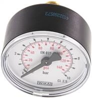
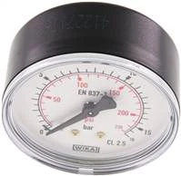
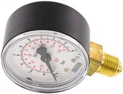
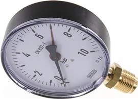
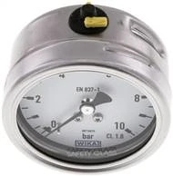
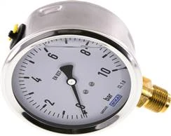
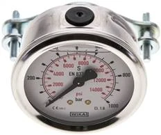
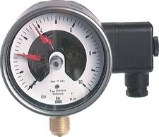
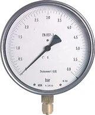

MW-140 · manometer ngang
WIKA MW 1040
0-10 bar40mmG1/80-145 psi
Đồng hồ áp suất nhỏ cho khí nén, nước, máy công nghiệp
Chi tiết →Fast Group hỗ trợ mua, đặt hàng và báo giá đồng hồ áp suất WIKA theo mã part number, dải đo bar/psi, đường kính mặt, ren kết nối, kiểu chân đứng/chân sau và vật liệu lắp đặt.
Trang này được bố trí để không bỏ sót các truy vấn quan trọng như mua đồng hồ áp suất WIKA ở đâu, WIKA 0-10 bar, WIKA 100mm G1/2, WIKA MW 140, WIKA MS 140, đồng hồ glycerin WIKA và nhà cung cấp WIKA tại Việt Nam.
Một số mã thông dụng nhất — bấm Chi tiết để xem đầy đủ thông số, ảnh và gửi báo giá. Xem toàn bộ mã theo nhóm ở phần bên dưới.
Đồng hồ áp suất nhỏ cho khí nén, nước, máy công nghiệp
Chi tiết →
Ren G1/4 phổ biến, dễ đối chiếu với thiết bị đang lắp
Chi tiết →
Ứng dụng áp trung bình, dễ đọc tại hiện trường
Chi tiết →
Đồng hồ áp suất chân đứng cho tủ máy, đường ống, cụm khí nén
Chi tiết →
Dùng khi cần mặt đồng hồ lớn, đọc xa trong nhà máy
Chi tiết →
Môi trường cần vật liệu inox, chống ăn mòn tốt hơn
Chi tiết →
Giảm rung kim cho thủy lực, bơm, máy nén, cụm rung động
Chi tiết →
Lắp tủ, panel, máy công nghiệp cần mặt trước gọn
Chi tiết →
Giám sát áp suất, báo mức, liên động tín hiệu trong hệ thống
Chi tiết →
Kiểm tra, hiệu chuẩn, điểm đo cần độ chính xác cao
Chi tiết →Bấm vào từng mã để xem thông số, ảnh và gửi RFQ. Các mã được gom theo nhóm sản phẩm để dễ đối chiếu dải đo và kích thước.
99 mã · nhóm MW-140
95 mã · nhóm MS-140
57 mã · nhóm MS-180
55 mã · nhóm MS-60063MB5CR
49 mã · nhóm MFRE-163GLYCR
48 mã · nhóm MS-1100CR
48 mã · nhóm MSE-163GLYCRE
48 mã · nhóm MSE-163GLYCR
44 mã · nhóm MFRE-140
42 mã · nhóm MSK-10610021CR
39 mã · nhóm MSE-140CR
36 mã · nhóm MW-140ES
36 mã · nhóm MS-140ES
34 mã · nhóm MWK-10610021CR
27 mã · nhóm MS-163GLYCR
26 mã · nhóm MSF-1200160MB
25 mã · nhóm MW-163GLYCR
24 mã · nhóm MS-163GLYCRE
24 mã · nhóm MW-163GLYCRE
24 mã · nhóm MS-1100GLYCRE
24 mã · nhóm MS-163GLYES
24 mã · nhóm MS-1100GLYCR
24 mã · nhóm MS-1100ES
24 mã · nhóm MS-1100GLYES
24 mã · nhóm MFRE-163GLYCRE
24 mã · nhóm MS-1160CR
24 mã · nhóm MW-1100GLYCRE
24 mã · nhóm MW-1100GLYCR
24 mã · nhóm MS-1160ES
24 mã · nhóm MS-1160GLYES
24 mã · nhóm MSS-1100GLYES
23 mã · nhóm MSS-1100ES
23 mã · nhóm MSK1610021ES
23 mã · nhóm MSS-1160GLYES
22 mã · nhóm MS-163GLY
22 mã · nhóm MW-163ES
21 mã · nhóm MW-163GLY
20 mã · nhóm MW-180
19 mã · nhóm MSP-1100
19 mã · nhóm MSP-1100ES
19 mã · nhóm MSSF-15160ES
18 mã · nhóm MSS-163GLYES
16 mã · nhóm MW-1100CR
16 mã · nhóm MSS-163ES
15 mã · nhóm MS-163ES
14 mã · nhóm MWK1610021ES
14 mã · nhóm MFRE-1100
12 mã · nhóm MSD1100
12 mã · nhóm MSS1160ES
12 mã · nhóm MWF16160
10 mã · nhóm MW-163GLYES
9 mã · nhóm MS1663SAU
6 mã · nhóm MW-1100GLYES
4 mã · nhóm MWDUE400
4 mã · nhóm HRFMANO
3 mã · nhóm MW10160CR
2 mã · nhóm MFRE-163GLY
Chọn dải đo sao cho áp làm việc thường nằm khoảng giữa thang đo. Các từ khóa mạnh: WIKA 0-10 bar, 0-16 bar, 0-100 bar, 0-600 bar.
Mặt 63mm gọn, 100mm dễ đọc, 160mm dùng khi cần quan sát xa hoặc yêu cầu độ chính xác cao hơn.
G1/4 và G1/2 xuất hiện nhiều trong dữ liệu. Cần xác nhận chân đứng, chân sau, lắp ngang hay lắp panel trước khi đặt hàng.
Khí, nước, dầu, hơi nóng, hóa chất và rung động quyết định chọn đồng hồ thường, inox, glycerin, màng seal hoặc phụ kiện siphon.
Khách hàng có thể gửi mã WIKA, ảnh nameplate hoặc thông số dải đo cho Fast Group để được hỗ trợ tra mã, kiểm tra thông số và báo giá. Nội dung nên ưu tiên các cụm nhà cung cấp WIKA, báo giá WIKA và cung cấp sản phẩm WIKA để tránh gây hiểu nhầm về quan hệ thương mại.
0-10 bar tương đương khoảng 0-145 psi. Khi làm SEO, nên ghi cả bar và psi trong bảng thông số để bắt khách tìm theo tiêu chuẩn châu Âu lẫn thiết bị nhập Mỹ.
Cần đối chiếu ren trên thiết bị đang lắp hoặc bản vẽ kỹ thuật. Trong dữ liệu WIKA hiện có, G1/4 xuất hiện nhiều, G1/2 thường dùng với mặt lớn hoặc ứng dụng công nghiệp nặng hơn.
Đồng hồ glycerin phù hợp vị trí có rung động, xung áp, bơm, thủy lực, máy nén hoặc nơi kim đồng hồ dễ dao động. Từ khóa nên có: đồng hồ áp suất WIKA có dầu, glycerin pressure gauge WIKA.